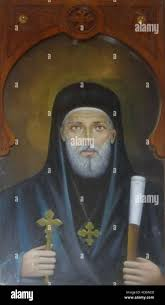

| الترتيب الكنسي: | البطريرك رقم 111 |
| فترة الرعاية: | من 1862 م إلى 1870 م |
| مدة الجلوس: | 7 سنوات و7 أشهر |
| المقر البابوي: | الكنيسة المرقسية بالأزبكية |
| مكان الدفن: | الكنيسة المرقسية بالأزبكية - القاهرة |
ولد ببلدة غبريال بمديرية المنيا، وترهب في دير القديس مكاريوس الكبير بوادي النطرون وعُين رئيساً للدير لتقواه وحسن تدبيره. اعتلى الكرسي المرقسي بعد نياحة البابا كيرلس الرابع، وعاصر فترة حكم الخديوي إسماعيل وحضر معه الاحتفال الأسطوري بافتتاح قناة السويس عام 1869 م.